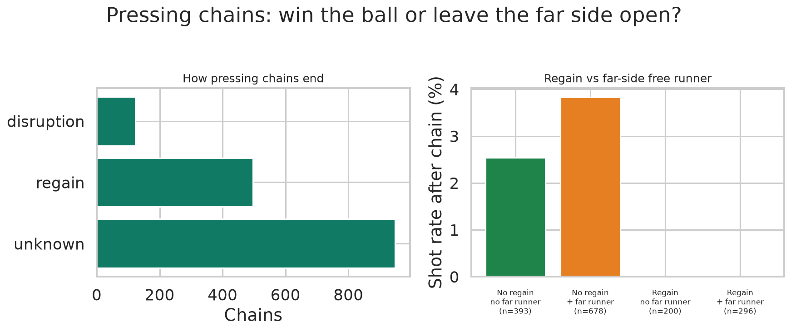
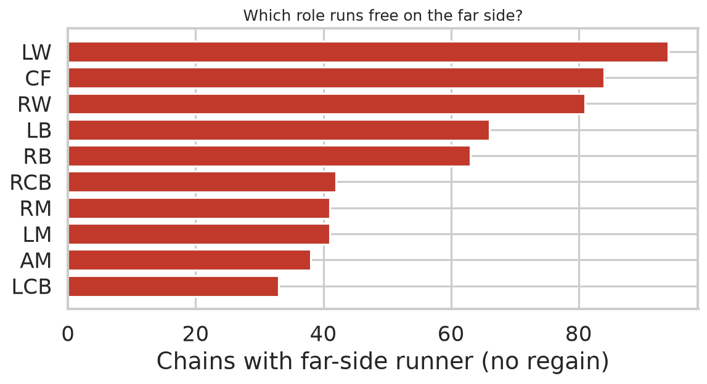

| Match | Frames | Length | End | Far role | Far channel | Press side | End |
|---|---|---|---|---|---|---|---|
| 2011166 | 7973–8133 | 7.0 | unknown | RM | wide_right | half_space_left,half_space_right,wide_left,wide_right | goal |
| 1959846 | 48195–48299 | 5.0 | unknown | LB | wide_left | center,half_space_right,wide_left | goal |
| 1996435 | 28159–28199 | 3.0 | unknown | RW | wide_right | center,half_space_left,wide_left | goal |
| 1874553 | 31833–32059 | 7.0 | unknown | LW | half_space_left | center,half_space_left,half_space_right | shot |
| 1996435 | 16646–16792 | 6.0 | unknown | RB | wide_right | center,half_space_left,half_space_right,wide_right | shot |
| 2006363 | 48462–48605 | 6.0 | unknown | RW | half_space_left | half_space_right,wide_right | shot |
| 2006363 | 50862–50960 | 6.0 | unknown | LDM | half_space_left | half_space_right,wide_right | shot |
| 1996436 | 37229–37259 | 4.0 | unknown | AM | half_space_left | center,half_space_right,wide_right | shot |
| 1959846 | 12600–12662 | 3.0 | unknown | LB | wide_left | center,half_space_left,half_space_right | shot |
| 1996436 | 54012–54091 | 3.0 | unknown | CF | half_space_right | center,half_space_left,half_space_right | shot |
| 2006363 | 19480–19513 | 3.0 | disruption | AM | wide_right | half_space_left,wide_left | shot |
| 2007721 | 38480–38534 | 3.0 | unknown | CF | half_space_left | center,half_space_right | shot |
| 2011166 | 10332–10387 | 3.0 | unknown | LDM | wide_left | half_space_right,wide_right | shot |
| 2013725 | 26214–26277 | 3.0 | unknown | CF | wide_right | half_space_left,wide_left | shot |
| 2016236 | 4185–4231 | 3.0 | unknown | CF | wide_left | half_space_right,wide_right | shot |
| 2017461 | 15198–15304 | 3.0 | unknown | CF | wide_left | half_space_right,wide_right | shot |
| 1874553 | 17956–18015 | 2.0 | unknown | CF | half_space_right | wide_left | shot |
| 1886347 | 44343–44391 | 2.0 | unknown | CF | half_space_left | center,half_space_right,wide_right | shot |
| 1886347 | 52701–52752 | 2.0 | unknown | CF | wide_left | center,half_space_right | shot |
| 1899585 | 59758–59798 | 2.0 | unknown | LM | half_space_left | half_space_right,wide_right | shot |
| 1927964 | 15695–15741 | 2.0 | unknown | CF | half_space_left | center,half_space_right,wide_right | shot |
| 1996435 | 56842–56878 | 2.0 | unknown | LDM | wide_right | half_space_left,wide_left | shot |
| 1996436 | 35992–36045 | 2.0 | unknown | LW | half_space_right | half_space_left | shot |
| 2006229 | 24163–24261 | 2.0 | unknown | CF | half_space_left | half_space_right,wide_right | shot |
| 2011166 | 41829–41859 | 2.0 | unknown | AM | half_space_left | half_space_right,wide_right | shot |
| 2017461 | 52337–52367 | 2.0 | unknown | LM | wide_left | half_space_right | shot |